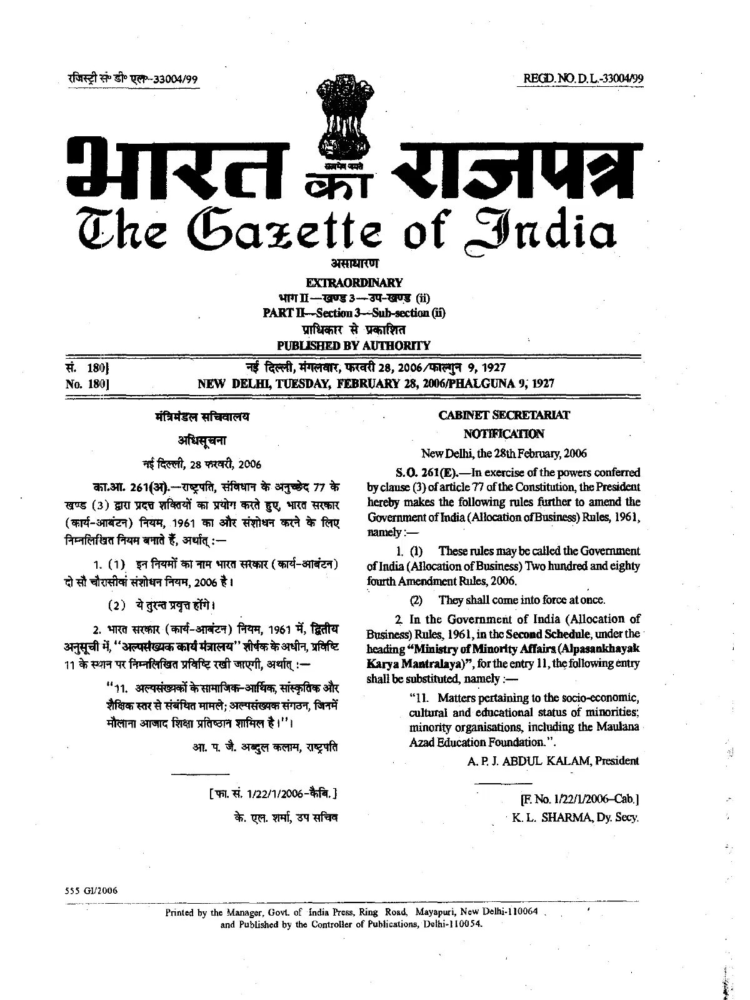

Amendment #284 (S.O. 261(E), 2006)
1 change: 0 to the First Schedule, 1 to the Second Schedule. 1 applied
The order, page by page
Page 1 of 1

1Schedule 2 › Ministry of Minority Affairs › entry 11
- 11. Matters pertaining to the socio-economic cultural and educational status of minorities minority organisations, including the Maulana · Azad Education Foundation.
applied at schedule 2 › ministry MINISTRY OF MINORITY AFFAIRS › entry 11 in the Rules after #284
How this document was read
From the Government of India (Allocation of Business) Rules, 1961 and their amendments, as published by the Cabinet Secretariat (cabsec.gov.in), read by orgpedia. The readings of the older scanned gazettes have known gaps.